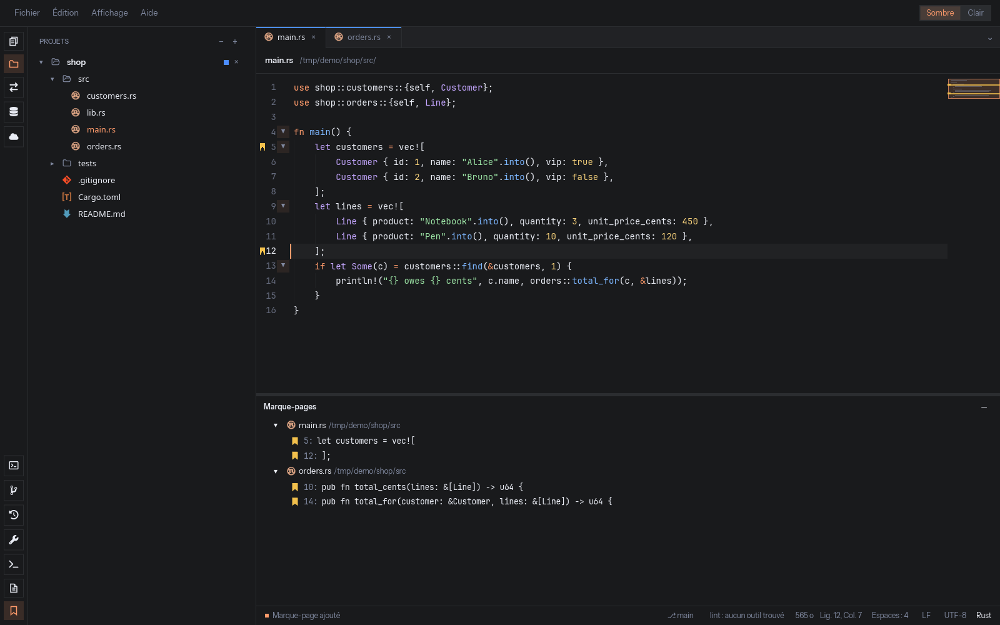
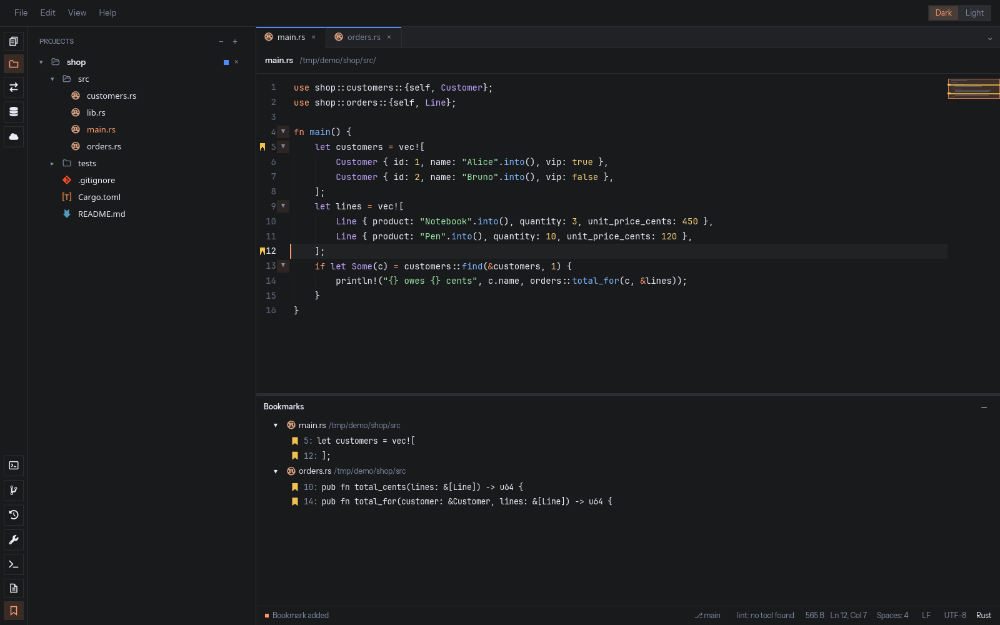

NavigationNavigation
Aller à la définition, précédent / suivant, marque-pages, aller au fichier, à la classe, au symbole.Go to definition, back / forward, bookmarks, go to file, class or symbol.
Aller à la définitionGo to definition
Ctrl+clic (Cmd+clic sur macOS) sur une fonction, une variable, une classe ou une interface saute à l'endroit où elle est définie. Sur la définition elle-même, la même action liste les endroits où elle est utilisée. Ardoise ne répond que lorsqu'il est sûr de lui.
Ctrl+click (Cmd+click on macOS) on a function, variable, class or interface jumps to where it is defined. On the definition itself, the same action lists where it is used. Ardoise only answers when it is sure.
Ctrl+clic sur un appel de fonction → le fichier de définition s'ouvre à la bonne ligne ; Ctrl+clic sur la définition → la liste des usages.Ctrl+click a call → the definition opens at the right line; Ctrl+click the definition → the list of uses.
Vidéo à venirVideo to comePrécédent et suivantBack and forward
Alt+← / Alt+→ (ou les boutons latéraux de la souris ; Cmd+[ / ] sur macOS) reviennent sur les endroits d'où vous avez sauté, d'un onglet à l'autre.
Alt+← / Alt+→ (or the mouse side buttons; Cmd+[ / ] on macOS) walk back and forth through the places you jumped from, across tabs.
Avec ou sans serveur de langageWith or without a language server
Les serveurs de langage sont facultatifs : Préférences › Serveurs de langage installe (et retire) celui d'un langage sans droits administrateur, et la barre d'état le propose à l'ouverture d'un fichier. Sans serveur, les définitions sont trouvées par une recherche de motifs prudente. Pendant qu'un serveur charge le projet, des noms peuvent manquer : la liste se met à jour.
Language servers are optional: Preferences › Language servers installs (and removes) the one of a language without administrator rights, and the status bar offers it when you open a file. Without one, definitions are found by a careful pattern search. While a server loads the project, names may be missing: the list updates itself.
Aller à…Go to…
| ActionAction | RaccourciShortcut |
|---|---|
| Aller au fichierGo to file | Ctrl Shift N |
| Aller à la classeGo to class | Ctrl Alt N |
| Aller au symboleGo to symbol | Ctrl Alt Shift N |
| Aller à la ligneGo to line | Ctrl G |
| Renommer le symboleRename symbol | Shift F6 |
Dans « Rechercher partout », tapez nom:ligne pour ouvrir un fichier à une ligne, et Type.nom pour un symbole.
In Search everywhere, type name:line to open a file at a line, and Type.name for a symbol.
Marque-pagesBookmarks
Un marque-page se pose depuis le menu contextuel du fichier (liste des fichiers) ou de l'éditeur (une ligne) : F11 le pose ou le retire, F2 / Shift+F2 passent au suivant / précédent. Les marque-pages s'affichent en ruban jaune dans la marge et un repère jaune dans la minimap. Shift+F11 ouvre le panneau des marque-pages : chaque fichier marqué avec ses lignes (58: du code) ; double-clic pour ouvrir à la ligne, clic droit pour supprimer.
A bookmark is set from the context menu of the file (file list) or of the editor (a line): F11 sets or removes it, F2 / Shift+F2 go to the next / previous. Bookmarks show as a yellow ribbon in the gutter and a yellow mark in the minimap. Shift+F11 opens the bookmarks panel: every marked file with its lines (58: some code); double-click to open at the line, right click to delete.


Le panneau des marque-pages avec deux fichiers et leurs lignes, et le ruban jaune visible dans la marge de l'éditeur à côté.The bookmarks panel with two files and their lines, and the yellow ribbon visible in the editor gutter beside it.
Capture à venirScreenshot to come